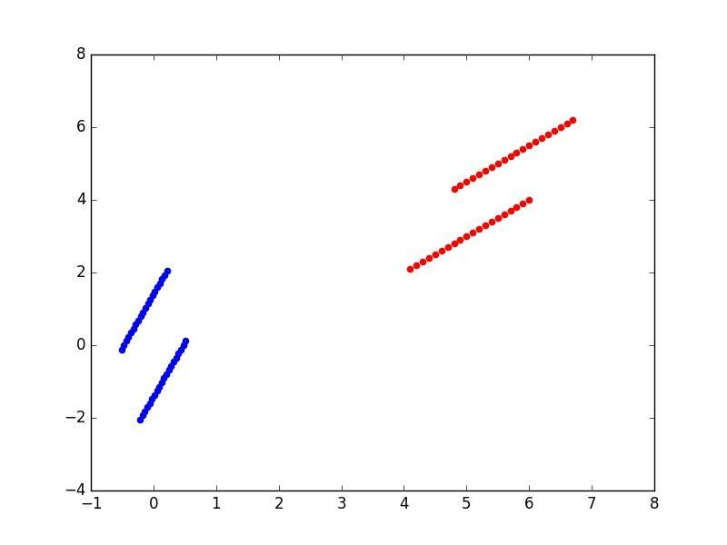

本篇将解读PCA的原理及其在python中的应用
主成分分析（PCA）是一种无监督的学习方式，是一种常用的线性降维方法。如果遇到多因素分析，想要很多个自变量与因变量进行线性回归分析，一般都必须进行降维处理，而主成分分析是一种很好的解决方案。
PCA是将数据的n维特征映射到k维上（k< n），k维是全新的正交特征。这里的k维是重新构造出来的k维特征，而不是简单的从n维特征中找出k维。 PCA求解的一般流程为：
（1）将原始数据进行标准化；
（2）计算标准化数据集的协方差矩阵；
（3）计算协方差矩阵的特征值和特征向量；
（4）保留最重要的k个特征（k< n），可以选择一个阈值，让前k个特征值之和减去后面n-k个特征值之和大于这 个阈值，找到这个k值，计算主成分变量值；
（5）找到这k个特征值对应的特征向量；
（6）将m乘n的数据集乘以k个n维的特征向量（n乘k），得到最终降维的数据集；
矩阵运算需要用到numpy包以及numpy包中的genfromtxt函数，这个函数是可以读取csv文件；还需要用到matplotlib进行画图
import numpy as np
from numpy import genfromtxt
import matplotlib.pyplot as plt
读取csv文件程序：
dataPath = r"D:\python\data.csv"
dataMat = genfromtxt(dataPath, delimiter=',')
设计pca函数
def pca(dataMat, k):
average = np.mean(dataMat, axis=0) #按列求均值
m, n = np.shape(dataMat)
meanRemoved = dataMat - np.tile(average, (m,1)) #减去均值
normData = meanRemoved / np.std(dataMat) #标准差归一化
covMat = np.cov(normData.T) #求协方差矩阵
eigValue, eigVec = np.linalg.eig(covMat) #求协方差矩阵的特征值和特征向量
eigValInd = np.argsort(-eigValue) #返回特征值由大到小排序的下标
selectVec = np.matrix(eigVec.T[:k]) #因为[:k]表示前k行，因此之前需要转置处理（选择前k个大的特征值）
finalData = normData * selectVec.T #再转置回来
return finalData
finalData = pca(dataMat, 2)
plt.scatter(dataMat.T[:1],dataMat.T[1:], color='red', s=20)
plt.scatter(finalData.T[:1],finalData.T[1:], color='blue', s=20)
plt.show()
plt.close()
最终结果：
